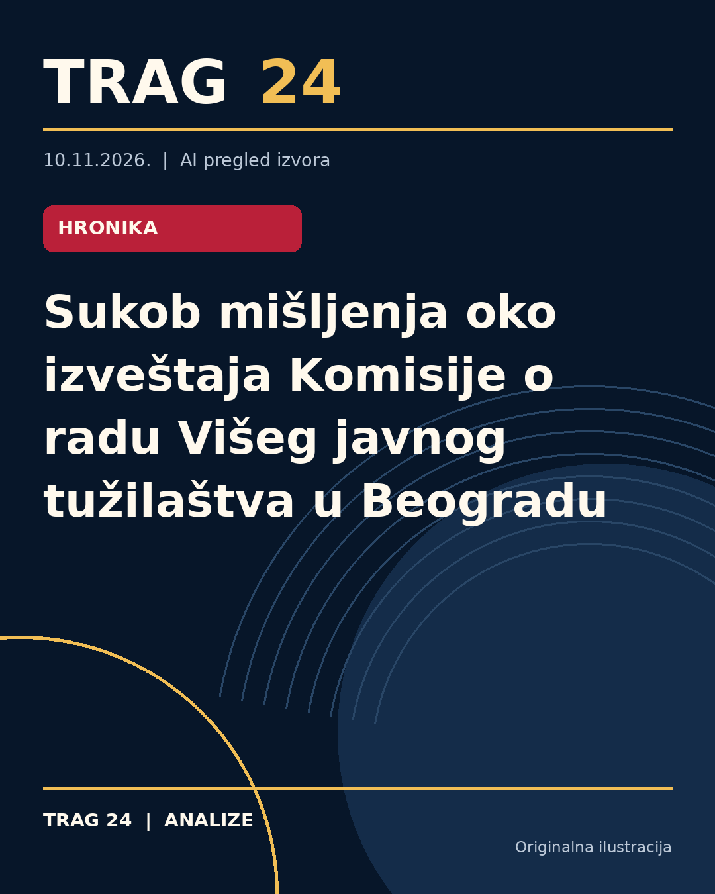

Sukob mišljenja oko izveštaja Komisije o radu Višeg javnog tužilaštva u Beogradu

ŠTA SE DOGODILO
Komisija za nadzor Vrhovnog javnog tužilaštva objavila je izveštaj u kome se navode osnovi sumnje da je glavni javni tužilac Višeg javnog tužilaštva u Beogradu Nenad Stefanović zloupotrebljavao ovlašćenja i kršio zakon, te da je uspostavio tzv. paratužilački sistem. Izveštaj će biti dostavljen Javnom tužilaštvu za organizovani kriminal radi dalje istrage i eventualnog krivičnog gonjenja. Sa druge strane, Više javno tužilaštvo u Beogradu odbacilo je kao neutemeljene ove navode i istaklo niz prigovora na sam sastav i način rada Komisije.
HRONOLOGIJA
Izveštaj Komisije objavljen je 2026. godine, a u njemu su detaljno analizirani ključni predmeti u radu Višeg javnog tužilaštva u Beogradu. Na isti dan i u narednim danima usledile su reakcije i saopštenja VJT u Beogradu u kojima se osporavaju navodi iz izveštaja. Komisija je, prema tekstovima, posetila VJT u Beogradu i detaljno analizirala rad tužilaštva i njegovog rukovodstva, dok će VJT nakon detaljne analize izveštaja naknadno izneti svoj stav o konkretnim navodima.
ŠTA NAVODE IZVORI
Komisija tvrdi da Stefanović formalno deluje u okviru sistema, ali da faktički rukovodi «paratužilačkim sistemom», zloupotrebljavajući funkciju za vanpravne ciljeve i instrumentalizujući pojedine tužioce. U izveštaju se navode detaljni primeri selektivnog postupanja, zloupotreba ovlašćenja, pritisaka i uskraćivanja prava oštećenih. S druge strane, Više javno tužilaštvo u Beogradu ističe da je sastav Komisije bio promenljiv i nejasan, da nije jasno kako je ostvaren kontinuitet nadzora, te da izveštaj može biti zloupotrebljen u interne obračune. Takođe, osuđuju objavljivanje detalja pre nego što je izveštaj dostavljen VJT-u i primedbe na postupanje pojedinih članova Komisije kao što je javni nastup tužioca Branka Stamenkovića tokom rada Komisije.
ŠTA JE POTVRĐENO
Potvrđeno je da je Komisija obavila kontrolu rada Višeg javnog tužilaštva u Beogradu i sastavila izveštaj sa nalazima i preporukama. Izveštaj je javno objavljen, a nalazi su poslati nadležnim organima za dalje postupanje. Takođe, potvrđeno je da je VJT u Beogradu javno reagovao osporavajući navode izveštaja i predstavivši svoje stavove o radu Komisije i procesu nadzora. Poznato je da je Komisija analiza rada pokrivala i više konkretnih predmeta iz prakse.
ŠTA NIJE POTVRĐENO
Nije potvrđeno da li će biti pokrenut bilo kakav disciplinski ili krivični postupak protiv Nenada Stefanovića ili drugih lica, jer ta odluka zavisi od daljeg postupanja nadležnih organa i javnog tužilaštva za organizovani kriminal. Takođe, ne postoje nezavisni dokazi ili sudske odluke koje bi potvrdile navode o paratužilačkom sistemu ili zloupotrebama okarakterisanim u izveštaju Komisije. Nije zvanično potvrđeno tačno ko su svi članovi Komisije, niti da li i kako je ostvarivan kontinuitet njenog rada, što je predmet osporavanja VJT-a u Beogradu.
ŠTA OSTАJE OTVORENO: Ostaje nejasno kako će nadležni organi postupiti sa izveštajem Komisije i da li će pokrenuti istragu ili druge postupke. Takođe nije jasno kako će biti rešena administrativna i proceduralna pitanja oko rada same Komisije, kao i da li će se u budućnosti promeniti način nadzora i kontrole rada javnih tužilaštava. Javnost i dalje nema potpuni uvid u kompletnu dokumentaciju koja je korišćena za izradu izveštaja, kao i u odgovor VJT nakon što završi analizu. Ostaje i dalje pitanje da li će ova kontroverza imati uticaj na rad Višeg javnog tužilaštva u Beogradu i javno poverenje u pravosudni sistem.
Izvori
- https://n1info.rs/vesti/vjt-odbacuje-navode-iz-izvestaja-komisije-vrhovnog-javnog-tuzilastva/
- https://nova.rs/vesti/hronika/vjt-reagovalo-povodom-izvestaja-komisije-vrhovnog-javnog-tuzilastva-neutemeljeni-navodi/
- https://www.danas.rs/vesti/drustvo/vrhovno-javno-tuzilastvo-nenad-stefanovic-krivicno-gonjenje/
Ova analiza je pripremljena uz pomoć veštačke inteligencije na osnovu javno dostupnih izvora. Navodi izvora nisu nužno nezavisno potvrđeni.